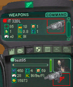

| Your Nerve Center and Wells required no Transium to build, but all other buildings
require some Transium, so let the wells pump while you get familar with the controls. First, exit the Nerve Center by hitting "Esc.".
Click on your Weapon inventory icon. It will display the default defensive pistol, the IT320L. Click on the IT320L icon and drag it to the box with the pistol icon below your avatar portrait. The weapon will appear there, and the background behind the IT320L will brighten, indicating you have this item equipped. Armor is equipped in the same way, but you do not start with built armor. Hit the "F" key. This will bring up a targeting cursor and set you into mouse-look mode or 'Attack Mode' (Note: You can only enter this mode if you have a weapon equipted). Left-click to fire. You only have a limited supply of Transium in your backpack, so don't use it all up. (p>Now try holding down the "X" key. This will enable the selection cursor while still leaving you in mouse-look mode. This is handy for quickly accessing certain buildings or rovers when you cant afford to leave 'Attack Mode'. Now hit the "F4" key. This will switch to a 3rd person view. Hit "F4" agai to return to 1st person view. Now click on the IT320L icon and drag it on top of your avatar portrait. This unequips the weapon. |
 |